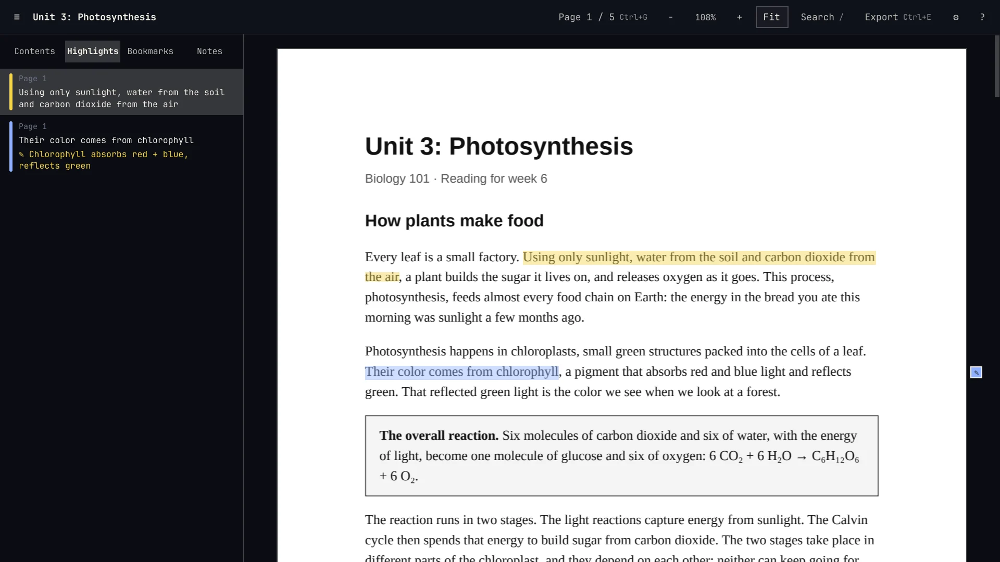
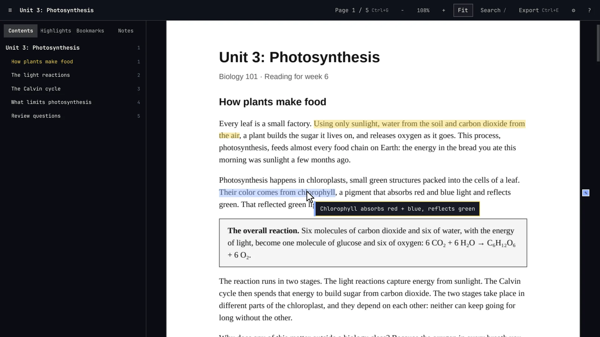
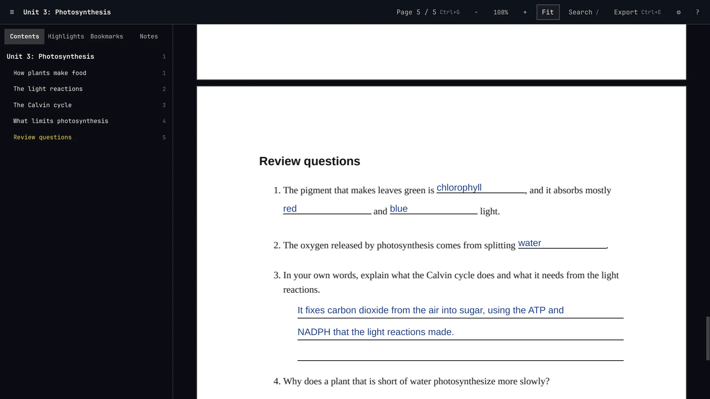
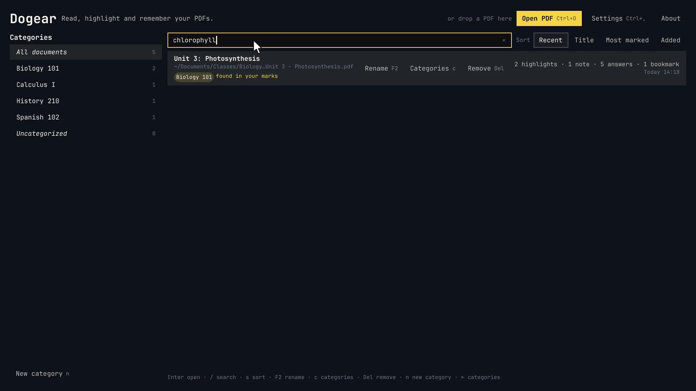
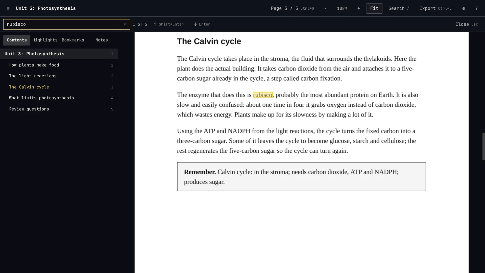
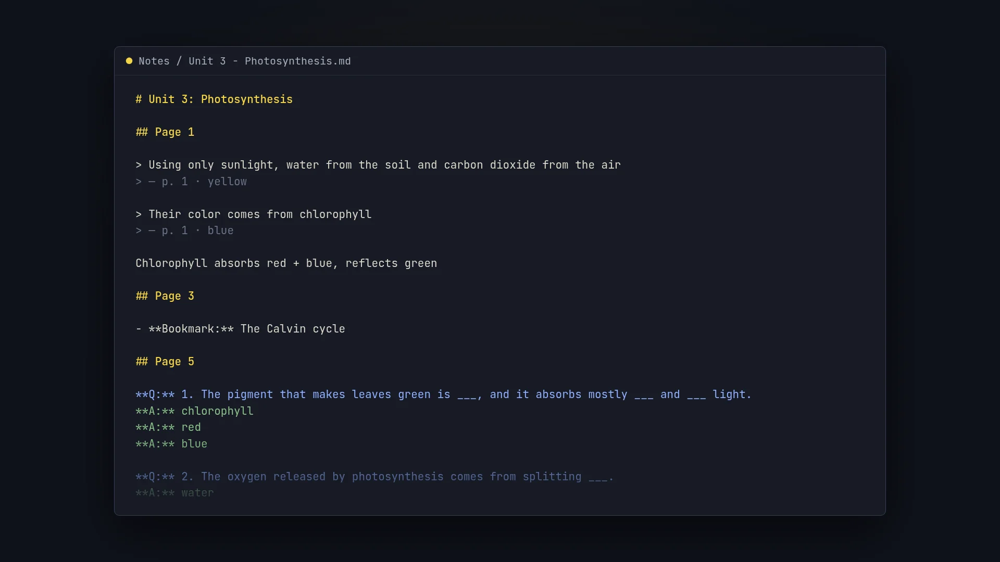
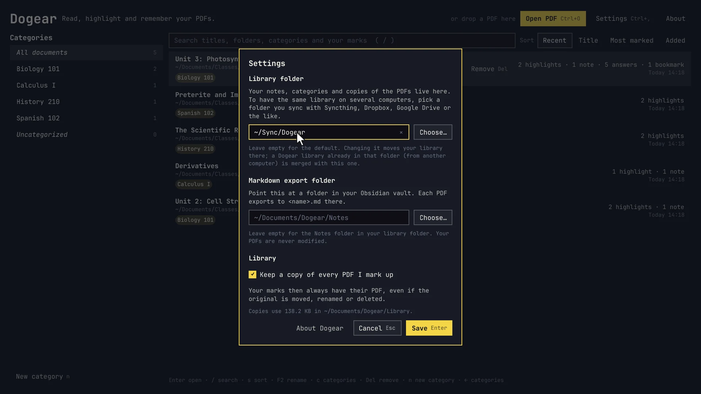

A PDF reader for studying, made for Omarchy. Highlight in five colors, take notes, fill in worksheet blanks by clicking them, and take it all to your notes as Markdown.

A reading for Biology 101, with its highlights and a note in the sidebar.
Recorded from the real app, with a handout written for the demo.

Select text and press 1–5 to highlight it in one of five colors, or a to highlight and write a note at once. Click a highlight to change its color, edit its note, copy it or delete it.
Rest the pointer on a highlight and its note appears. Notes about the whole document live in the sidebar.

Click a blank on a worksheet and type. Dogear finds the answer lines on the page, whether they're drawn rules, underscores or dotted lines, and writes on them. Ruled lines under a question take a multi-line answer.
Tab goes to the next blank. Ctrl+= and Ctrl+- fit more on a short line.

Every PDF you open is in the library, with how much you've marked in it. Search reaches inside your notes and highlights, not only titles. Sort by recent, title or most marked, and file documents under categories, one for each course.
Give a file with an unreadable name a name you'll recognize. Dogear keeps a copy of every PDF you mark up, so your notes never lose their page.

The sidebar has the document's outline, your highlights, bookmarks and notes. Press b to bookmark a page and / to search the whole document.
Dogear remembers where you stopped in every file, and opens there next time.

Ctrl+E exports everything to a Markdown file, page by page: highlights as quotes with their notes, bookmarks, and each answer under its question. Front matter and tags come along, so it drops straight into an Obsidian vault.

Your notes, categories and copies of the PDFs live in one folder, ~/Documents/Dogear. Point Dogear at a folder you sync with Syncthing, Dropbox or Google Drive, and every computer has the same library.
Edits made on another computer show up in an open document as they arrive, and if two computers changed the same document, Dogear merges both, keeping every mark.
Dogear follows Omarchy's keyboard-first way of working, and its theme: change your Omarchy theme and Dogear follows, live. Press ? in the app for the full list.
Dogear is a reader, not a service.
Marks are kept beside the PDF, never written into it, and matched to it by its contents. Rename or move a file and its notes follow; nothing is ever dropped into your class folders.
Dogear makes no network connections and collects nothing. Syncing is your own folder and your own sync tool, so your notes go only where you send them.
Every document's marks are one small JSON file, and the export is Markdown. If you stop using Dogear, your notes still open in anything.
Built with Qt and Qt PDF, the engine from Chromium's PDF viewer. Pages render off the main thread, so scrolling stays smooth on long books.
An Arch package for Arch and Omarchy is on every GitHub release. It puts Dogear in your app launcher and lets it open PDFs.
autonomix-cli installs the package and keeps Dogear updated from GitHub Releases.
Download dogear-*-any.pkg.tar.zst from the latest release, then:
One file with its own Python and Qt, for x86_64 distros with glibc 2.34 or newer: Ubuntu 22.04, Debian 12, Fedora 39 and newer. Download dogear-0.1.1-x86_64.AppImage from the latest release, then:
Or let Gear Lever or AppImageLauncher add it to your menu and keep it updated.
It needs Python 3.12 or newer, PySide6, and the Qt PDF library, which on Arch comes with qt6-webengine.
Dogear is new: this is version 0.1.1. Questions and problems: help@ninepointlabs.com or GitHub issues.